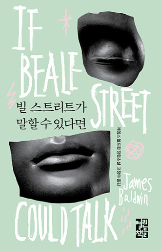

NEW
새로나온 책
더보기 ＋-
빌 스트리트가 말할 수 있다면
제임스 볼드윈
-
단지 흑인이라서, 다른 이유는 없다
제임스 볼드윈
-
인도로 가는 길
E. M. 포스터
-
아이의 뇌는 스스로 배운다
셀린 알바레즈
열린책들 전집
열린책들 전자책

이벤트
편집자 추천도서
고급 예술 읽기의 또 다른 재미가 시작됩니다.
바로가기제임스 볼드윈
모든 흑인이 태어난 곳, 빌 스트리트
그곳에서 서로를 위해 버티는 한 연인의 잔인한 진실
20세기 미국 현대 문학사의 위대한 축이자 민권 운동가인 제임스 볼드윈의 사랑 이야기 <빌 스트리트가 말할 수 있다면>이 열린책들에서 출간되었다. 1970년대 미국, 인종 차별로 인한 고통과 분노가 깔려 있는 시간과 공간을 배경으로, 폭력적이고 차별적이고 부당한 처벌을 받는 한 연인의 이야기가 담긴 장편소설이다. 이 소설은 순수하고 희생적인 사랑을 통해 당시 인종 문제에 영향력 있는 목소리를 냈던 민권 운동가 볼드윈이 서정적으로 그리는, 암울하고 희망이 없고 그러나 지극히 현실적인 흑인 사회의 초상이다.
두 주인공과 주변인물들이 겪는 고통의 원인은 <인종 차별>이라는 너무도 명확하고 단순한 것이지만, 시간이 지날수록 손 쓸 수도, 헤어날 수 없는 비극의 수렁이 된다. 제임스 볼드윈은 선한 인물들이 영문을 알 수 없는 비극 속에서 어떻게 연대하고, 어떻게 인간의 강인함을 발휘할 수 있는지 보여 주며 한줄기 빛을 그려 넣는다.
할렘의 한 거리, 어릴 때부터 이웃이었던 티시와 포니는 함께 미래를 꿈꾸는 연인으로 발전한다. 둘은 결혼을 약속하고 같이 살 집을 겨우 마련했다. 하지만 어느 날 경찰이 들이닥쳐 이유 없이 포니를 체포했고, 단지 흑인이라는 이유로 강간 사건의 용의자가 되어 감옥에 들어간다. 마침 티시는 아기를 가지고, 포니의 무죄를 입증하기 위해 그리고 새롭게 태어날 새 생명을 위해 티시와 그녀의 가족들은 고통스러운 하루하루를 보낸다. 그러나 포니를 용의자로 지목했던 로저스 부인이 사라지고, 포니의 무죄 입증은 갈수록 어려워진다.
제임스 볼드윈
1960년대 미국 전역을 충격으로 몰아넣은 강력하고 도발적인 선언문
20세기 미국 현대 문학사의 위대한 축이자 민권 운동가인 제임스 볼드윈의 에세이 <단지 흑인이라서, 다른 이유는 없다>가 열린책들에서 출간되었다. 이 책의 원제는 <The fire next time>으로, 1963년에 단행본으로 발행되었다. 예언적이고, 맹렬하고, 영적이고, 야만적이고, 명료한 이 두 편의 에세이로 제임스 볼드윈은 미국에서 가장 중요한 작가 중 하나로 자리매김한다.
이 책은 두 개의 편지글로 구성된다. 첫 번째 에세이는 자신의 이름과 같은 조카에게 보내는 <나의 감옥이 흔들렸다:노예 해방 1백 주년을 맞아 조카에게 보내는 편지>이고, 두 번째 글인 <십자가 아래에서: 내 마음속 구역에서 보낸 편지>는 모든 미국인에게 보내는 글이다.
볼드윈은 14살 조카에게 애정 어린 말투로 백인들의 사회에서 굳건히 살아남길 당부한다. 자신의 어린 시절의 이야기와 가족의 이야기를 통해 이 사회에서 개개인의 흑인이 차지하는 위치를 알려주고, 각성하지 않으면 지금까지의 모든 것이 반복될 뿐이라고 말한다. 단지 흑인이라는 이유만으로 겪어야 하는 일들은 <네 열등함의 증표가 아니라 그들의 비인간성과 두려움의 증거>라고 상기시키며 <수용>과 <통합>이라는 단어의 이면을 보라고, 사실 백인과 흑인 중 상대를 수용해야 할 주체는 백인이 아닌 흑인이라고 알려 준다.(<옮긴이의 말> 중에서) 친밀한 혈육에게 보내는 글을 통해 인종 차별의 유산이 대물림되지 않기를 바라는 강력한 마음이 드러난다.
두 번째 에세이는 이 책의 대부분을 차지하는 중요한 글로, 기독교에 대한 자신의 경험, 흑백 분리를 주장하는 이슬람 종교 인사와의 만남 등을 통해 종교의 비논리성을 밝히고, <흑인 사회의 독립과 백인에 대한 복수>라는 그들의 주장에 개탄을 표한다. 이어서 그는 그 모든 것을 아울러 자신만의 해법을 내놓는다. 그는 <미국이 흑인과 백인 둘 다로 이루어진 국가임을, 그리고 서로가 강력히 필요한 존재임을 인정하라>며 개개인의 인식과 책임의 필요성을 강조했다. 그리고 지금 행동하지 않으면 노아의 시대에 홍수로 인류가 심판을 받았듯, 다음번엔 불(The fire next time)로 심판을 받게 될 것이라는 예언적인 말로 마무리한다.
E. M. 포스터
“위대한 작품…… 놀라운 통찰력과 탁월한 묘사, 그리고 대가다운 명징한 의식” ― 데일리 텔레그래프
『타임』 선정 <현대 100대 영문 소설>
모던 라이브러리 선정 <20세기 영문 소설 100선>
1924년 제임스 테이트 블랙 기념상 수상
1925년 페미나상 수상
영국의 문호 E. M. 포스터의 『인도로 가는 길』이 영문학 번역가 민승남 씨의 번역으로 열린책들에서 출간되었다. 열린책들 세계문학 253번. 포스터의 마지막 장편소설이자 대표작인 이 작품은 1924년 발표되었으며 1984년 데이비드 린 감독에 의해 영화화되어 세계적으로 널리 알려졌다. 『타임』 선정 <현대 100대 영문 소설>, 모던 라이브러리 선정 <20세기 영문 소설 100선>에 선정되는 등 영국 소설을 대표하는 작품으로 평가받고 있다.
아델라 퀘스티드는 약혼자의 어머니 무어 부인과 함께 인도 땅에 도착한다. 두 여인은 그곳에서 진실한 인도와 대면하기를 원하지만 약혼자 로니를 비롯한 그곳의 영국인들은 그러한 관심을 초심자의 호기심으로 치부하고 만다. 그러던 중 무어 부인은 젊은 이슬람교 의사 아지즈를 만나 민족을 초월한 우정을 나누고, 아지즈는 이들을 마라바르 동굴로의 소풍에 초대한다. 그러나 아델라가 동굴 속에서 성추행을 당했다고 고발하면서 사태는 걷잡을 수 없는 소용돌이에 빠져드는데…….
『인도로 가는 길』은 출간 즉시 영국은 물론 미국에서까지 선풍적인 반향을 일으키며 포스터의 대표작이 된 소설이다. 포스터가 대중적인 성공을 거둔 것은 이 작품이 처음이었다. 실제로 두 차례에 걸쳐 인도를 방문하기도 하였으며 양국의 관계와 식민통치에 지속적인 관심을 보여 왔던 포스터는 영국령의 인도의 한 도시라는 응축된 사회적 상황을 배경으로 영국인들과 인도인들 사이에서 빚어지는 첨예한 대립과 이를 초월하여 화합으로 나아가려 하는 개인들의 모습을 치밀하게 그려 내고 있다.
셀린 알바레즈
뇌 과학과 프랑스 자율 교육의 만남!
프랑스 종합 베스트셀러 1위
2017년 프시콜로지-프낙상 수상
자율 VS 규율
폭넓은 자율 속에서 성장한 아이가 더 잘 자랄까? 엄격한 규율로 가르친 아이가 더 잘 자랄까? 아이들의 성공적인 미래를 결정할 양육 방식은 어느 쪽일까?
『아이의 뇌는 스스로 배운다』는 프랑스 육아 교육의 혁신을 이끌고 있는 젊은 교육자 셀린 알바레즈의 첫 번째 저술로, 뇌 과학을 기초로 프랑스 빈민 지대의 한 공립 유치원에서 시행했던 <자율 교육> 실험을 소개하고 있다. 프랑스 기초 교육 실패(초등학생의 40퍼센트가 학습 부진 상태로 중학교에 올라간다)와 학력 불평등이 사회 문제로 불거지던 시점에 출간되며 <자율 대 규율>이라는 양육 방식을 둘러싸고 큰 논쟁을 불러왔다. 특히 양육자의 개입을 최소화하고 아이의 자율성을 극대화하라는 그녀의 제안은 학부모와 교사 사이에서 큰 반향을 일으켰고, 2016년 출간 즉시 프랑스 종합 베스트셀러 1위에 올랐다.
알바레즈는 미취학 시기의 아이들을 대상으로 아이의 타고난 <배움 본능>과 <선한 본성>에 맞춤한 교육을 시행하면 탁월한 교육 효과가 나타날 것으로 확신했고, <단순히 아이들을 가르치기 위해서가 아니라 교육 시스템을 바꾸기 위해> 직접 교육 현장으로 뛰어들었다. 그녀는 교육 당국에게 교육 방식에 관한 전권을 달라고 요청했고, 젠빌리에 유치원에서 만 3~5세 아동 25명을 대상으로 3년간(2011~2014년) 교육학적 실험에 착수했다. 최신 뇌 과학과 자율 교육 전통(프랑스 교육학의 거장인 장 이타르, 에두아르 세갱, 마리아 몬테소리)을 접목한 그녀의 교육 방식은 곧바로 <폭탄 같은 효과>를 가져왔다. 이 책은 그동안 우리 육아 교육이 아이 뇌의 잠재력을 얼마나 과소평가해 왔으며, 어른의 역할을 얼마나 과장해 왔는지 증명한다.
문학 평론가 이남호 교수(고려대) 책임 편집
한국 현대화가 20인이 표지화에 참여
이제 언제 어디서나 편리하게 세계문학 e전집을 구입하세요.
앱 안의 서점에서 구입한 도서는 기다림 없이 바로 볼 수 있고,
영구적으로 소장 가능하며,
최대 5대의 기기에서 자유롭게 이용하실 수 있습니다.
책을 읽으면서 작성한 메모, 밑줄, 책갈피는 <독서 노트>에 자동으로 기록됩니다.
<독서 노트>를 펼치면 내 독서 기록을 한눈에 확인할 수 있습니다.
한 번의 터치로, 기록된 책 속 구절로 바로 이동할 수 있습니다.
기록된 메모, 밑줄은 <독서 노트>에서 바로 공유가 가능합니다.